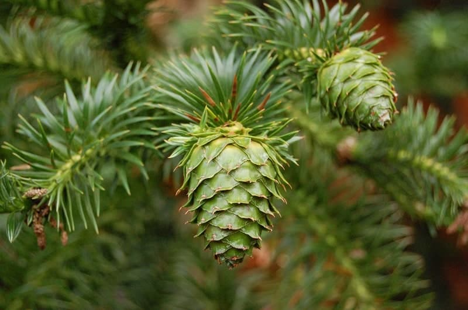
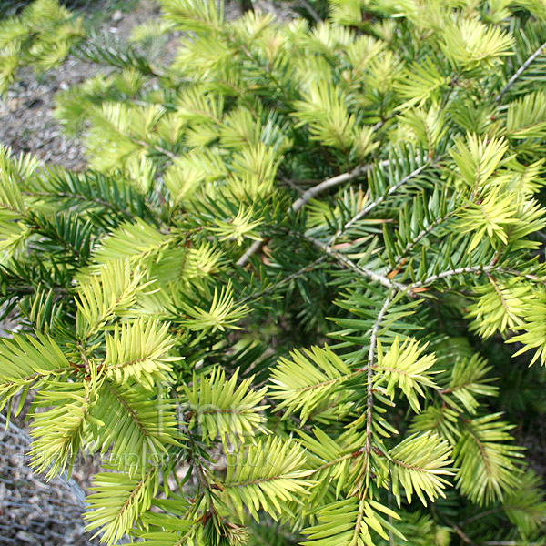

1. Đặc điểm hình thái
Cây gỗ, cao đến 20 - 25m với đường kính ngang ngực đến 0,6 - 0,8m hay hơn nữa. Vỏ thân tương đối phẳng, nứt dọc nông, bong từng mảng. Tán hình bán cầu dẹt. Chồi đông hình trứng, cỡ 4 - 5 x 2 - 3 mm. Lá mọc xoắn ốc, toả về các phía, hình dải thẳng, cỡ 2 - 3 (- 4) x 0,25 - 0,3cm , chóp tù tròn, gốc có cánh hẹp men dần theo cuống đến tận gốc, mặt trên màu lục bóng và hơi khum lồi, mặt dưới có 8 - 12 dải lỗ khí màu xám trắng phủ kín, trừ gân giữa và mép. Lá trên cành chồi và cành cây non to hơn rõ rệt, 6 - 7 x 0,4 - 0,5cm , thẳng hay hơi cong hình liềm, ít nhiều xếp thành 2 mặt phẳng tạo thành chữ V góc rộng đến 1200. Cuống mang nón cái trưởng thành mập, đường kính 5 - 6 mm. Nón cái mọc đơn độc, hình trụ, dài đến 14 - 19cm , trước khi nở có đường kính khoảng 4cm , sau khi nở đến 7cm . Vẩy nón cái ở giữa ít nhiều hình tim - 5 cạnh, màu nâu sẫm - hơi vàng, có phiến dài rộng bằng nhau, khoảng 2,5 - 2,8cm , từ giữa hơi thót thành chóp tròn, hơi cong ra ngoài, mép có răng nông, thưa và không đều; cuống vẩy hình tam giác 6 x 6 mm; lá vẩy hình dải, chỉ dài đến 1/2 vẩy, rộng 3 - 4 mm, dính với vẩy ở phần dưới, phần trên tự do ôm sát vẩy, tận cùng bằng một răng hình tam giác ở giữa với hai thuỳ tròn ở hai bên. Hạt hình thuôn - trứng ngược, cỡ 10 - 12 x 7 mm, màu nâu nhạt. Cánh hạt màu nâu nhạt, cỡ 2 - 2,2 x 1cm .


2. Phân bố
Cao Bằng (Hạ Lang), Bắc Kạn (Na Rì: Kim Hỷ).